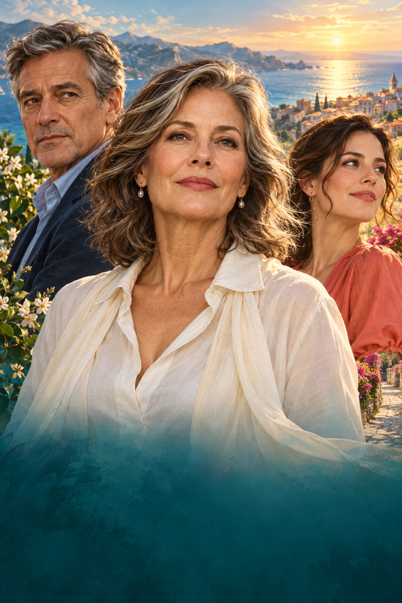

NOVEL OS / ORIGINAL COVER STUDIES
同一个故事，四种视觉表达
主角的选择、家人的牵引，与她仍然保留的爱。
打开封面工作室 →
After
Thirty Years,
I Choose
Me
E L E A N O R H A L E
01
爱与边界
关系三角 · 主角与家人的牵引
After
Thirty Years,
I Choose
Me
E L E A N O R H A L E
02
这一次，她先离席
戏剧场景 · 让一次选择被看见
After
Thirty Years,
I Choose
Me
E L E A N O R H A L E
03
牵挂在身后
空间叙事 · 新生活与旧牵挂

After
Thirty Years,
I Choose
Me
E L E A N O R H A L E
04
把未来还给自己
明亮合成 · 自我重启的情绪承诺